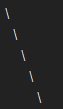

you see i refuse to count Paradox
an actual starting scum game

you see i refuse to count Paradox
an actual starting scum game
there was only one problem with paradox
your postcount and content went like this over time
\
\
oh lol forum formatting
I drew a diagonal downward line with backslashes

ah yeah it definitely went down
i was too busy bugging Light and ATNo asking “is this good” for every single thing i posted
Funnily enough i find it to be the opposite
Towngames arent stressful for me
Its like a puzzle, or a game
I just want to connect all the dots
Its exciting and i really enjoy it
Scumgames are stressful for me because its hard for me to not… be genuine? Like, this isnt a matter of morals or whatever
Its just genuinely less fun for me to lie than it is for me to spot the lies
Im probably in the minority but idc
Town fun
hmm alright then gimme your rand luck i’ll give you mine
maybe i’ll think differently if i start randing scum more often, i prob think scum is better at least in part because i see them winning so often
for me the fun in playing scum goes from villagers going after each other and me knowing about it
i don’t know if this is just cheesy but
what i liked most about being scum as Paradox was just genuinely getting to know my scumbuddies?
i even said it in my classcard
“fuck i’m getting attached to my scumbuddies please send help”
I guess ive never really had one of those games since ive always been under the crosshairs as scum and i feel like im trying to wriggle my way out
The closest would be alice_alard, as i wasnt really under pressure ever, but i didnt actually know who was a wolf vs villager
So that satisfaction wasnt there
I can see where youre coming from
It might help if i knew what that felt like though
Hello you can call me Isabel_Savage the Inq.
Funny thing about that game was I correctly scum read the 2 starting cultists D1.
tell me why the closest i’ve ever gotten to feeling the scumbuddy connection  was talking to you and chloe in nightchats
was talking to you and chloe in nightchats
to top it off
you were both scum too
I caught Geoffrey complaining about Thomas the 1st and not doing much other than that.
Helen on the other hand was obviously going UTR and I caught that too.
because one of the main aspects of being a wolf is having a teammate to talk to during the day/night
and you had that in the form of dead people (and allies chat)
and also you were wolfsiding with your reads
;-;
gdi i really was wasn’t i
i still maintain only reason i got MVP is cause i was last BD alive not because i was “good” in any way
talking to people was nice tho
even if they didn’t respond
you know where i got that feeling and it’s always fun
Do you wanna swap awards
imagine being a wolf and watching town implode
couldnt be me
yes please i do